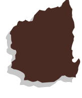

시장 찾기
시장지도
지역별 시장정보
지도를 클릭 하여
시장정보를 확인하세요.
- 
광장시장
- 서울 종로구 창경궁로 88
- 오전 9:00~오후 6:00
- 02-2267-0291
서울 최대 규모의 재래시장, 대한민국 최초의 전통시장! 수많은 할리우드 스타들도 내한하면 찾은 명소로 유명하다. 다양한 먹거리를 즐기고 싶다면 광장시장에 가보시는 건 어떤가요?
자세히보기파주금촌통일시장
- 경기 파주시 금정24길 18-7
- 오전 9:00~오후 6:00
- 031-941-2470
전통과 현대가 잘 어우러진 금촌통일시장
매달 둘째 주 토요일과 일요일에는 '금촌문화난장'이라는 어울림 장터까지 개최되고 있기 때문에 날짜를 맞추어 가면 다양한 문화체험을 즐길 수 있는 시간까지 가질 수 있다.
모래내시장
- 인천 남동구 호구포로 818
- 오전 9:00~오후 6:00
- 032-471-1427
구경하는 재미, 고르는 재미, 먹는 재미까지!
상인들의 친절한 서비스 교육, 의식 개혁 교육 등을 실시하여 시장을 이용하는 사람들에게 질 높은 서비를 제공하기 위해 지속적으로 노력하고 있는 볼거리 많은 시장입니다.
양양전통시장
- 양양읍 남문5길 9
- 오전 6:00~오후 7:00
- 033-671-2878
양양전통시장은 상설시장으로 양양상권의 중심이며, 매월 4일과 9일에는 전통 5일장이 양양시장을 중심으로 주변에 들어서서 시골장의 훈훈한 인심과 정취를 느낄 수 있는 시장이다.
자세히보기
서문시장
- 대구광역시 중구 달성로 50
- 오전 6:00~오후 7:00
- 053-256-6341
국내 3대 명품시장이며 경상권 최대 시장으로써 다양한 먹거리와 상품들이 많기로 유명한 전통시장이다. 특히 2016년 6월에는 국내 최대규모의 ‘서문 야시장’이 개장되면서 한국의 전통과 맛을 선사할 수 있는 관광지로 부상하게 되었다.
자세히보기양동시장
백 년 전통이 보증하는 믿음과 신뢰
광주시 서구 양동에 위치하고 있는 양동시장은 전라남도에서 가장 큰 규모를 가지고 있다. 백년이 넘는 오랜 전통을 가지고 있는 시장으로 믿고 이용할 수 있는 전통시장으로 유명하다.

국제시장
- 부산광역시 중구 국제시장2길 25
- 오전 9:00~오후 7:00
- 051-245-73891
부산 중구, 부산의 중심지에 위치한 국제시장은 부산의 대표적인 전통시장이다. 2015년에 글로벌 명품 시장 육성 사업으로 선정되어 국내외 관광객들이 다채롭게 즐길 수 있는 복합 문화 공간이 바로 부산 국제시장이다.
자세히보기
제주동문시장
동문 재래시장은 제주도 도심에 자리하였으며, 가장 크고 역사가 깊은 상설 재래시장이다. 엄청난 규모를 자랑하는 만큼 현지인과 여행객들의 발걸음이 끊이지 않는 곳이다. 밤에는 먹거리가 가득한 야시장의 묘미를 즐길 수 있다.
자세히보기서산동부전통시장
3년 연속 최우수시장으로 선정된 서산동부전통시장.충청남도 서북부 권역에서는 최대 규모에 해당하는 시장이다. 해안과 인접한 지리적 특성으로 바다에서 생산되는 수산물 거래가 활발하다.
자세히보기익산북부시장
전라북도 내에서 가장 큰 규모의 전통시장으로 유명하다. 2016년 문화관광형시장으로 선정되면서 찾는 사람이 더욱 늘었다. 다양한 품목들을 판매하여 제대로 된 전통시장을 구경하고 싶다면 익산 북부시장이 제격이다.
자세히보기곡성기차마을전통시장
새롭게 거듭난 곡성기차마을전통시장은 한옥과 돔형태로 멋스럽게 변신했다. 농수산물을 비롯해 다양한 식재료들이 많이 있어서 시장 구경하는 재미가 쏠쏠하다. 곡성 기차마을과 인접해 있어 기차마을 구경도 함께 할 수 있다.
자세히보기고령대가야시장
값싸고 질 좋은 건어물과 과일, 대장간에서 직접 제작한 농기구 등이 많이 있으며 시골장에서만 맛볼 수 있는 장터국밥, 소구레 등 구수한 맛과 옛 정취를 고스란히 느낄 수 있다.
자세히보기상남시장
전통 재래시장의 모습 그대로를 간직하며 볼거리, 살거리도 많고 먹거리도 많다. 칼국수와 닭갈비, 곱창전골 등 창원시내에서 유명한 맛집도 많이 모여있는 곳으로 유명하다.먹는 것뿐만 아니라 시장을 구경하는 것도 상남시장만의 쏠쏠한 재미다.
자세히보기

{kind=link}
{kind=link}
{kind=link}